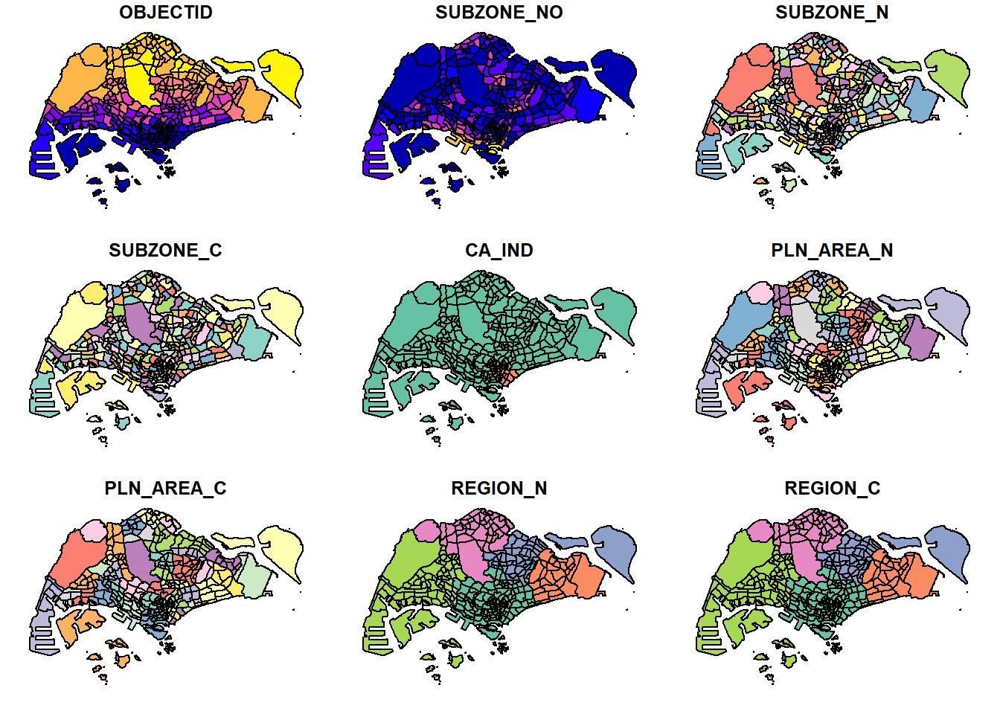
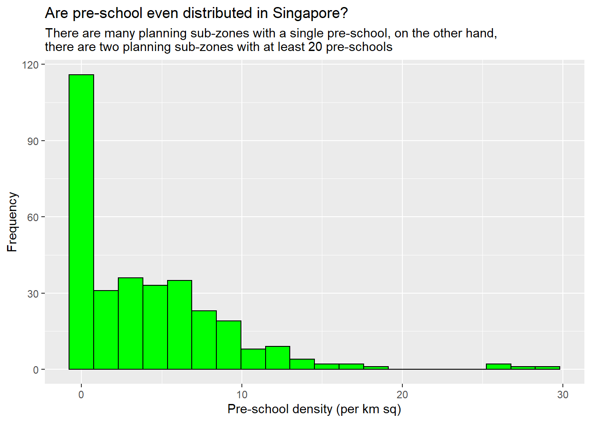
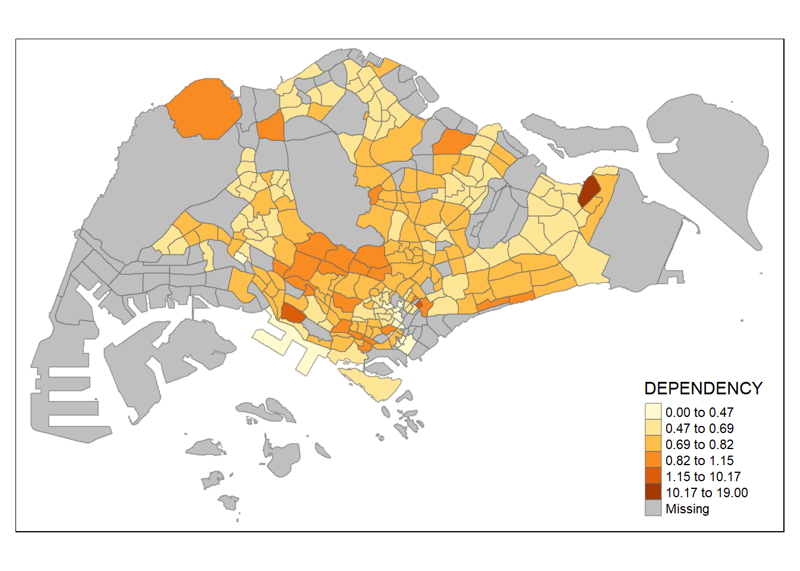
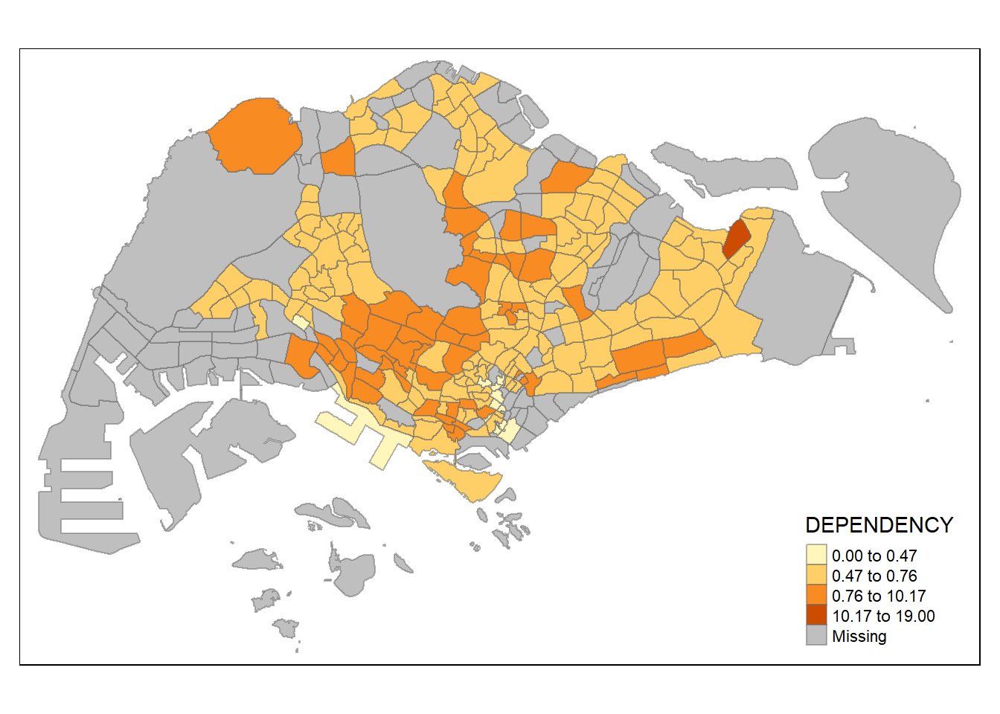
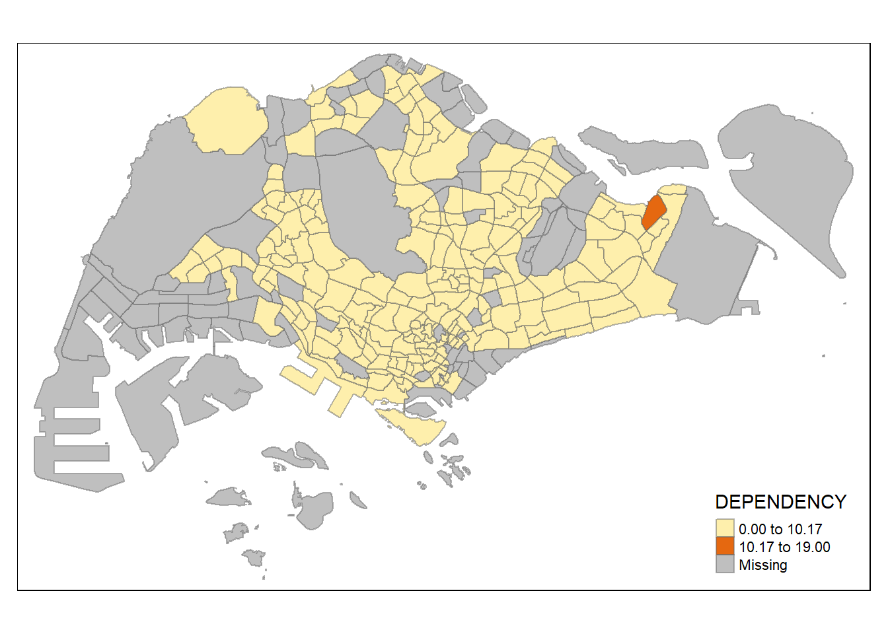
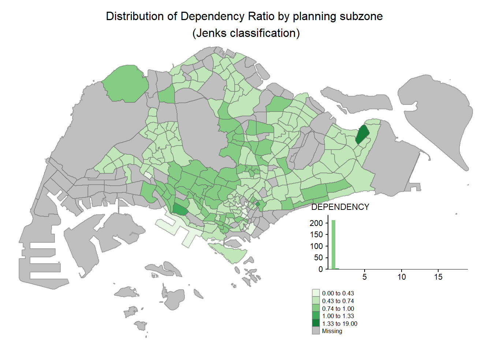

pacman::p_load(sf,tidyverse, tmap)Hands-on Exercise 1: Geospatial Data Wrangling with R and Choropleth Mapping with R
Overview
In this hands-on exercise, I learn how to import and wrangle geospatial data using appropriate R packages.
Getting Started
In order for me to even create this screen now, I first need to go to File/New File/Quarto Document. I will need to ensure that HTML is ticked as recommended format for authoring. I will then key in the title accordingly. The format is Hands-on_ExX with X is my exercise number.
After I do this, I will start referring to the handout.
The code chunk below installs and loads sf and tidyverse packages to R environment. I will need to ensure that pacman package has been installed before running the below code.
Note to self: type in ```{r} then press Enter to create the below frame. There are two tabs (see above menue on the left): Source and Visual. In order to see this below frame, click on the Visual tab.
p_load function of pacman package is used to install and load tidyverse packages into R environment.
Importing Geospatial Data
Importing polygon feature data
Again, I will need to ensure that sf package has been installed and I call the library sf before running the below code chunk.
mpsz<-st_read(dsn="data/geospatial",layer="MP14_SUBZONE_WEB_PL")Reading layer `MP14_SUBZONE_WEB_PL' from data source
`C:\thaorocket\ISS624\Hands-on_Ex1\data\geospatial' using driver `ESRI Shapefile'
Simple feature collection with 323 features and 15 fields
Geometry type: MULTIPOLYGON
Dimension: XY
Bounding box: xmin: 2667.538 ymin: 15748.72 xmax: 56396.44 ymax: 50256.33
Projected CRS: SVY21Note to self: In order to use relative file path, I will need to save the file as Hands-on_Ex1.qmd under Hands-on_Ex1 folder/data
st_read() function of sf package is used to import the MP14_SUBZONE_WEB_PL shapefile into R as a polygon feature data frame. 2 arguments will need to be used, namely: dsn to define the file path and layer to provide the shapefile name. Note that no extension such as .dbf, .prj, .sbn is needed (look at the Files on the right corner in RStudio to see the list of the files under the geospatial folder).
Under Geometry Type, the geospatial objects are multipolygon features. There are a total of 323 multipolygon features and 15 fields in mpsz simple feature data frame. mpsz is in svy21 projected coordinates systems (see under projected CRS). The bounding box provides the x extend and y extend of the data.
Import polyline feature data in shapefile form
For this section, use st_read() function of sf package to import CyclingPath shapefile into R as line feature data frame
cyclingpath <- st_read(dsn = "data/geospatial",
layer = "CyclingPath")Reading layer `CyclingPath' from data source
`C:\thaorocket\ISS624\Hands-on_Ex1\data\geospatial' using driver `ESRI Shapefile'
Simple feature collection with 1625 features and 2 fields
Geometry type: LINESTRING
Dimension: XY
Bounding box: xmin: 12711.19 ymin: 28711.33 xmax: 42626.09 ymax: 48948.15
Projected CRS: SVY21Note to self: I changed the file path from CyclingPathGazette to Cycling Path as there is no CyclingPathGazette file in the geospatial folder.
From the above message, there are in total 1625 features and 2 fields in CyclingPath linestring feature data frame. It is also in svy21 projected coordinates system.
Importing GIS data in kml format
The pre-schools-location-kml is in kml format. st_read() function is also used in this case (see below code chunk). However, do note that the complete path and the kml file extension is provided. There is no dsn and layer specified.
preschool = st_read("data/geospatial/pre-schools-location-kml.kml")Reading layer `PRESCHOOLS_LOCATION' from data source
`C:\thaorocket\ISS624\Hands-on_Ex1\data\geospatial\pre-schools-location-kml.kml'
using driver `KML'
Simple feature collection with 1359 features and 2 fields
Geometry type: POINT
Dimension: XYZ
Bounding box: xmin: 103.6824 ymin: 1.248403 xmax: 103.9897 ymax: 1.462134
z_range: zmin: 0 zmax: 0
Geodetic CRS: WGS 84Unlike other files in the data folder, pre-schools-location-kml.kml is a file by itself. Therefore, we do not need dsn and layer arguments but need to provide the full path.
From the above message, the preschool file is in point feature data frame. There are a total of 1359 features and 2 fields. Unlike the previous 2 examples above, preschool is in wgs84 coordinates system.
Checking the content of a simple feature data frame
Working with st_geometry()
st_geometry(mpsz)Geometry set for 323 features
Geometry type: MULTIPOLYGON
Dimension: XY
Bounding box: xmin: 2667.538 ymin: 15748.72 xmax: 56396.44 ymax: 50256.33
Projected CRS: SVY21
First 5 geometries:MULTIPOLYGON (((31495.56 30140.01, 31980.96 296...MULTIPOLYGON (((29092.28 30021.89, 29119.64 300...MULTIPOLYGON (((29932.33 29879.12, 29947.32 298...MULTIPOLYGON (((27131.28 30059.73, 27088.33 297...MULTIPOLYGON (((26451.03 30396.46, 26440.47 303...st_geometry() provides a general way to display basic information such as type of geometry, the geographic extent of the features and the coordinates systems of the data.
Working with glimpse()
glimpse () is under dplyr. Make sure dplyr is installed and run before using this function.
glimpse(mpsz)Rows: 323
Columns: 16
$ OBJECTID <int> 1, 2, 3, 4, 5, 6, 7, 8, 9, 10, 11, 12, 13, 14, 15, 16, 17, …
$ SUBZONE_NO <int> 1, 1, 3, 8, 3, 7, 9, 2, 13, 7, 12, 6, 1, 5, 1, 1, 3, 2, 2, …
$ SUBZONE_N <chr> "MARINA SOUTH", "PEARL'S HILL", "BOAT QUAY", "HENDERSON HIL…
$ SUBZONE_C <chr> "MSSZ01", "OTSZ01", "SRSZ03", "BMSZ08", "BMSZ03", "BMSZ07",…
$ CA_IND <chr> "Y", "Y", "Y", "N", "N", "N", "N", "Y", "N", "N", "N", "N",…
$ PLN_AREA_N <chr> "MARINA SOUTH", "OUTRAM", "SINGAPORE RIVER", "BUKIT MERAH",…
$ PLN_AREA_C <chr> "MS", "OT", "SR", "BM", "BM", "BM", "BM", "SR", "QT", "QT",…
$ REGION_N <chr> "CENTRAL REGION", "CENTRAL REGION", "CENTRAL REGION", "CENT…
$ REGION_C <chr> "CR", "CR", "CR", "CR", "CR", "CR", "CR", "CR", "CR", "CR",…
$ INC_CRC <chr> "5ED7EB253F99252E", "8C7149B9EB32EEFC", "C35FEFF02B13E0E5",…
$ FMEL_UPD_D <date> 2014-12-05, 2014-12-05, 2014-12-05, 2014-12-05, 2014-12-05…
$ X_ADDR <dbl> 31595.84, 28679.06, 29654.96, 26782.83, 26201.96, 25358.82,…
$ Y_ADDR <dbl> 29220.19, 29782.05, 29974.66, 29933.77, 30005.70, 29991.38,…
$ SHAPE_Leng <dbl> 5267.381, 3506.107, 1740.926, 3313.625, 2825.594, 4428.913,…
$ SHAPE_Area <dbl> 1630379.27, 559816.25, 160807.50, 595428.89, 387429.44, 103…
$ geometry <MULTIPOLYGON [m]> MULTIPOLYGON (((31495.56 30..., MULTIPOLYGON (…glimpse() provides us more info about the associated attributes in the dataframe. It reports the data type of each field. For example, OBJECTID is in int, SUBZONE_N is in chr, X_ADDR is in double precision values (dbl).
Working with head()
head(mpsz, n=3) Simple feature collection with 3 features and 15 fields
Geometry type: MULTIPOLYGON
Dimension: XY
Bounding box: xmin: 28160.23 ymin: 28369.47 xmax: 32362.39 ymax: 30247.18
Projected CRS: SVY21
OBJECTID SUBZONE_NO SUBZONE_N SUBZONE_C CA_IND PLN_AREA_N PLN_AREA_C
1 1 1 MARINA SOUTH MSSZ01 Y MARINA SOUTH MS
2 2 1 PEARL'S HILL OTSZ01 Y OUTRAM OT
3 3 3 BOAT QUAY SRSZ03 Y SINGAPORE RIVER SR
REGION_N REGION_C INC_CRC FMEL_UPD_D X_ADDR Y_ADDR
1 CENTRAL REGION CR 5ED7EB253F99252E 2014-12-05 31595.84 29220.19
2 CENTRAL REGION CR 8C7149B9EB32EEFC 2014-12-05 28679.06 29782.05
3 CENTRAL REGION CR C35FEFF02B13E0E5 2014-12-05 29654.96 29974.66
SHAPE_Leng SHAPE_Area geometry
1 5267.381 1630379.3 MULTIPOLYGON (((31495.56 30...
2 3506.107 559816.2 MULTIPOLYGON (((29092.28 30...
3 1740.926 160807.5 MULTIPOLYGON (((29932.33 29...The n argument allows users to select the number of records to display. In the above example, since n=3, there are 3 records displayed.
Plotting the Geospatial Data
In order to visualize the geospatial features, we can use plot()
plot(mpsz)Warning: plotting the first 9 out of 15 attributes; use max.plot = 15 to plot
all
The default plot is a multi-plot of all attributes, up to a reasonable maximum as shown above.
By using the code chunk below, we choose to plot only the geometry:
plot(st_geometry(mpsz))
Alternatively, we can also use plot() to plot the sf object by using a specific attribute. See below example:
plot(mpsz["PLN_AREA_N"])
plot(mpsz["REGION_N"])
Note to self: plot() is meant for plotting geospatial object for quick look.
Working with Projection
Map projection is an important property of a geospatial data. In order to perform geoprocessing using two geospatial data, we need to ensure that both geospatial data are projected using similar coordinate system.
In this section, I learn how to project a simple feature data frame from one coordinate system to another coordinate system. The technical term of this process is called projection transformation.
Assigning EPSG code to a simple feature data frame
This section addresses the issue where the coordinate system of the source data was either missing or wrongly assigned during the importing geospatial data into R process.
st_crs(mpsz)Coordinate Reference System:
User input: SVY21
wkt:
PROJCRS["SVY21",
BASEGEOGCRS["SVY21[WGS84]",
DATUM["World Geodetic System 1984",
ELLIPSOID["WGS 84",6378137,298.257223563,
LENGTHUNIT["metre",1]],
ID["EPSG",6326]],
PRIMEM["Greenwich",0,
ANGLEUNIT["Degree",0.0174532925199433]]],
CONVERSION["unnamed",
METHOD["Transverse Mercator",
ID["EPSG",9807]],
PARAMETER["Latitude of natural origin",1.36666666666667,
ANGLEUNIT["Degree",0.0174532925199433],
ID["EPSG",8801]],
PARAMETER["Longitude of natural origin",103.833333333333,
ANGLEUNIT["Degree",0.0174532925199433],
ID["EPSG",8802]],
PARAMETER["Scale factor at natural origin",1,
SCALEUNIT["unity",1],
ID["EPSG",8805]],
PARAMETER["False easting",28001.642,
LENGTHUNIT["metre",1],
ID["EPSG",8806]],
PARAMETER["False northing",38744.572,
LENGTHUNIT["metre",1],
ID["EPSG",8807]]],
CS[Cartesian,2],
AXIS["(E)",east,
ORDER[1],
LENGTHUNIT["metre",1,
ID["EPSG",9001]]],
AXIS["(N)",north,
ORDER[2],
LENGTHUNIT["metre",1,
ID["EPSG",9001]]]]At the last line of the above window, we can see EPSG 9001. This is a wrong EPSG code because the correct EPSG code for svy21 should be 3414.
In order to assign the correct EPSG code to mpsz data frame, we use st_set_crs() of sf package as shown in the code chunk below:
mpsz3414<-st_set_crs(mpsz, 3414)Warning: st_crs<- : replacing crs does not reproject data; use st_transform for
thatNow, let us check the CRS again of the mpsz3414
st_crs(mpsz3414)Coordinate Reference System:
User input: EPSG:3414
wkt:
PROJCRS["SVY21 / Singapore TM",
BASEGEOGCRS["SVY21",
DATUM["SVY21",
ELLIPSOID["WGS 84",6378137,298.257223563,
LENGTHUNIT["metre",1]]],
PRIMEM["Greenwich",0,
ANGLEUNIT["degree",0.0174532925199433]],
ID["EPSG",4757]],
CONVERSION["Singapore Transverse Mercator",
METHOD["Transverse Mercator",
ID["EPSG",9807]],
PARAMETER["Latitude of natural origin",1.36666666666667,
ANGLEUNIT["degree",0.0174532925199433],
ID["EPSG",8801]],
PARAMETER["Longitude of natural origin",103.833333333333,
ANGLEUNIT["degree",0.0174532925199433],
ID["EPSG",8802]],
PARAMETER["Scale factor at natural origin",1,
SCALEUNIT["unity",1],
ID["EPSG",8805]],
PARAMETER["False easting",28001.642,
LENGTHUNIT["metre",1],
ID["EPSG",8806]],
PARAMETER["False northing",38744.572,
LENGTHUNIT["metre",1],
ID["EPSG",8807]]],
CS[Cartesian,2],
AXIS["northing (N)",north,
ORDER[1],
LENGTHUNIT["metre",1]],
AXIS["easting (E)",east,
ORDER[2],
LENGTHUNIT["metre",1]],
USAGE[
SCOPE["Cadastre, engineering survey, topographic mapping."],
AREA["Singapore - onshore and offshore."],
BBOX[1.13,103.59,1.47,104.07]],
ID["EPSG",3414]]Now the EPSG code is 3414 as shown on the last line of the above window.
Transforming the projection of preschool from wgs84 to svy21
In this section, I learn about transforming geographic coordinate system to projected coordinate system. This is because geographic coordinate system is not suitable if we need to use distance and/or area measurements. Geographic data is usually in decimal degree format, which is only good to identify explicit location but not for any calculations.
The projected coordinate systems flatten the earth in order to calculate the system.
st_crs(preschool)Coordinate Reference System:
User input: WGS 84
wkt:
GEOGCRS["WGS 84",
DATUM["World Geodetic System 1984",
ELLIPSOID["WGS 84",6378137,298.257223563,
LENGTHUNIT["metre",1]]],
PRIMEM["Greenwich",0,
ANGLEUNIT["degree",0.0174532925199433]],
CS[ellipsoidal,2],
AXIS["geodetic latitude (Lat)",north,
ORDER[1],
ANGLEUNIT["degree",0.0174532925199433]],
AXIS["geodetic longitude (Lon)",east,
ORDER[2],
ANGLEUNIT["degree",0.0174532925199433]],
ID["EPSG",4326]]In this scenario, we need to use st_transform() of sf package. This is because we need to re-project preschool from one coordinate system to another coordinate system mathematically.
Use the code chunk below to transform the coordinate system:
preschool3414<-st_transform(preschool,crs=3414)
preschool3414Simple feature collection with 1359 features and 2 fields
Geometry type: POINT
Dimension: XYZ
Bounding box: xmin: 11203.01 ymin: 25667.6 xmax: 45404.24 ymax: 49300.88
z_range: zmin: 0 zmax: 0
Projected CRS: SVY21 / Singapore TM
First 10 features:
Name
1 kml_1
2 kml_2
3 kml_3
4 kml_4
5 kml_5
6 kml_6
7 kml_7
8 kml_8
9 kml_9
10 kml_10
Description
1 <center><table><tr><th colspan='2' align='center'><em>Attributes</em></th></tr><tr bgcolor="#E3E3F3"> <th>CENTRE_NAME</th> <td>BIG FOOT PRE SCHOOL LLP</td> </tr><tr bgcolor=""> <th>CENTRE_CODE</th> <td>PT9281</td> </tr><tr bgcolor="#E3E3F3"> <th>ADDRESS</th> <td>196, WEST COAST ROAD, SINGAPORE 127375</td> </tr><tr bgcolor=""> <th>POSTAL_CODE</th> <td>127375</td> </tr><tr bgcolor="#E3E3F3"> <th>INC_CRC</th> <td>838CD358794FD031</td> </tr><tr bgcolor=""> <th>FMEL_UPD_D</th> <td>20171208174048</td> </tr></table></center>
2 <center><table><tr><th colspan='2' align='center'><em>Attributes</em></th></tr><tr bgcolor="#E3E3F3"> <th>CENTRE_NAME</th> <td>POSSO PRESCHOOL @ WEST COAST RISE PTE LTD</td> </tr><tr bgcolor=""> <th>CENTRE_CODE</th> <td>PT8684</td> </tr><tr bgcolor="#E3E3F3"> <th>ADDRESS</th> <td>30, WEST COAST RISE, HONG LEONG GARDEN, SINGAPORE 127473</td> </tr><tr bgcolor=""> <th>POSTAL_CODE</th> <td>127473</td> </tr><tr bgcolor="#E3E3F3"> <th>INC_CRC</th> <td>F331CEB175F9C254</td> </tr><tr bgcolor=""> <th>FMEL_UPD_D</th> <td>20171208174048</td> </tr></table></center>
3 <center><table><tr><th colspan='2' align='center'><em>Attributes</em></th></tr><tr bgcolor="#E3E3F3"> <th>CENTRE_NAME</th> <td>GENESIS CHILD CARE PTE. LTD.</td> </tr><tr bgcolor=""> <th>CENTRE_CODE</th> <td>PT9132</td> </tr><tr bgcolor="#E3E3F3"> <th>ADDRESS</th> <td>2A, JUBILEE ROAD, SINGAPORE 128524</td> </tr><tr bgcolor=""> <th>POSTAL_CODE</th> <td>128524</td> </tr><tr bgcolor="#E3E3F3"> <th>INC_CRC</th> <td>4C2E7E55019A633F</td> </tr><tr bgcolor=""> <th>FMEL_UPD_D</th> <td>20171208174048</td> </tr></table></center>
4 <center><table><tr><th colspan='2' align='center'><em>Attributes</em></th></tr><tr bgcolor="#E3E3F3"> <th>CENTRE_NAME</th> <td>LITTLE FOOTPRINTS PRESCHOOL PTE. LTD.</td> </tr><tr bgcolor=""> <th>CENTRE_CODE</th> <td>PT9260</td> </tr><tr bgcolor="#E3E3F3"> <th>ADDRESS</th> <td>6, JUBILEE ROAD, SINGAPORE 128531</td> </tr><tr bgcolor=""> <th>POSTAL_CODE</th> <td>128531</td> </tr><tr bgcolor="#E3E3F3"> <th>INC_CRC</th> <td>DDF98422A198387B</td> </tr><tr bgcolor=""> <th>FMEL_UPD_D</th> <td>20171208174048</td> </tr></table></center>
5 <center><table><tr><th colspan='2' align='center'><em>Attributes</em></th></tr><tr bgcolor="#E3E3F3"> <th>CENTRE_NAME</th> <td>AMAR KIDZ @ WEST COAST LLP</td> </tr><tr bgcolor=""> <th>CENTRE_CODE</th> <td>PT9016</td> </tr><tr bgcolor="#E3E3F3"> <th>ADDRESS</th> <td>8, JALAN LEMPENG, #02 - 03, PARK WEST CONDO, SINGAPORE 128796</td> </tr><tr bgcolor=""> <th>POSTAL_CODE</th> <td>128796</td> </tr><tr bgcolor="#E3E3F3"> <th>INC_CRC</th> <td>EAB3263D23F126AF</td> </tr><tr bgcolor=""> <th>FMEL_UPD_D</th> <td>20171208174048</td> </tr></table></center>
6 <center><table><tr><th colspan='2' align='center'><em>Attributes</em></th></tr><tr bgcolor="#E3E3F3"> <th>CENTRE_NAME</th> <td>TCC PRESCHOOL FABER PTE LTD</td> </tr><tr bgcolor=""> <th>CENTRE_CODE</th> <td>PT9299</td> </tr><tr bgcolor="#E3E3F3"> <th>ADDRESS</th> <td>60, FABER TERRACE, FABER HILLS, SINGAPORE 129040</td> </tr><tr bgcolor=""> <th>POSTAL_CODE</th> <td>129040</td> </tr><tr bgcolor="#E3E3F3"> <th>INC_CRC</th> <td>195E3739B77E6A5F</td> </tr><tr bgcolor=""> <th>FMEL_UPD_D</th> <td>20171208174048</td> </tr></table></center>
7 <center><table><tr><th colspan='2' align='center'><em>Attributes</em></th></tr><tr bgcolor="#E3E3F3"> <th>CENTRE_NAME</th> <td>ACEKIDZ @ COMMUNITY</td> </tr><tr bgcolor=""> <th>CENTRE_CODE</th> <td>PT5950</td> </tr><tr bgcolor="#E3E3F3"> <th>ADDRESS</th> <td>2, CLEMENTI WEST ST 2, #03 - 06, WEST COAST COMMUNITY CENTRE, SINGAPORE 129605</td> </tr><tr bgcolor=""> <th>POSTAL_CODE</th> <td>129605</td> </tr><tr bgcolor="#E3E3F3"> <th>INC_CRC</th> <td>9B1070EE1CB4A3E2</td> </tr><tr bgcolor=""> <th>FMEL_UPD_D</th> <td>20171208174048</td> </tr></table></center>
8 <center><table><tr><th colspan='2' align='center'><em>Attributes</em></th></tr><tr bgcolor="#E3E3F3"> <th>CENTRE_NAME</th> <td>PCF SPARKLETOTS PRESCHOOL @ QUEENSTOWN BLK 145 (CC)</td> </tr><tr bgcolor=""> <th>CENTRE_CODE</th> <td>ST0092</td> </tr><tr bgcolor="#E3E3F3"> <th>ADDRESS</th> <td>145, MEI LING STREET, #01 - 137, SINGAPORE 140145</td> </tr><tr bgcolor=""> <th>POSTAL_CODE</th> <td>140145</td> </tr><tr bgcolor="#E3E3F3"> <th>INC_CRC</th> <td>820E90716985CCCA</td> </tr><tr bgcolor=""> <th>FMEL_UPD_D</th> <td>20171208174048</td> </tr></table></center>
9 <center><table><tr><th colspan='2' align='center'><em>Attributes</em></th></tr><tr bgcolor="#E3E3F3"> <th>CENTRE_NAME</th> <td>PCF SPARKLETOTS PRESCHOOL @ QUEENSTOWN BLK 53A (CC)</td> </tr><tr bgcolor=""> <th>CENTRE_CODE</th> <td>ST0176</td> </tr><tr bgcolor="#E3E3F3"> <th>ADDRESS</th> <td>53A, STRATHMORE AVENUE, #01 - 01, FORFAR HEIGHTS, SINGAPORE 143053</td> </tr><tr bgcolor=""> <th>POSTAL_CODE</th> <td>143053</td> </tr><tr bgcolor="#E3E3F3"> <th>INC_CRC</th> <td>A7DC7D2C961A8822</td> </tr><tr bgcolor=""> <th>FMEL_UPD_D</th> <td>20171208174048</td> </tr></table></center>
10 <center><table><tr><th colspan='2' align='center'><em>Attributes</em></th></tr><tr bgcolor="#E3E3F3"> <th>CENTRE_NAME</th> <td>MY FIRST SKOOL</td> </tr><tr bgcolor=""> <th>CENTRE_CODE</th> <td>NT0510</td> </tr><tr bgcolor="#E3E3F3"> <th>ADDRESS</th> <td>106, HENDERSON CRESCENT, #01 - 37, SINGAPORE 150106</td> </tr><tr bgcolor=""> <th>POSTAL_CODE</th> <td>150106</td> </tr><tr bgcolor="#E3E3F3"> <th>INC_CRC</th> <td>EB3942B460BB5CBC</td> </tr><tr bgcolor=""> <th>FMEL_UPD_D</th> <td>20171208174048</td> </tr></table></center>
geometry
1 POINT Z (19997.26 32333.17 0)
2 POINT Z (19126.75 33114.35 0)
3 POINT Z (20345.12 31934.56 0)
4 POINT Z (20400.31 31952.36 0)
5 POINT Z (19810.78 33140.31 0)
6 POINT Z (19550.92 33770.18 0)
7 POINT Z (20378.07 31665.55 0)
8 POINT Z (24835.77 30689.38 0)
9 POINT Z (25139.3 30636.01 0)
10 POINT Z (26771.14 30203.71 0)preschool3414 is now in svy21 projected coordinate system. Furthermore, under Bounding Box, the values are greater than 0-360 range of decimal degree commonly used by geographic coordinate systems.
Importing and Converting Aspatial Data
In this section, I learn how to import aspatial data into R environment and save it as tibble data frame. Next, I will need to convert it into a simple feature data frame.
Note: In Aspatial data, among the data fields, there are two fields that capture the x- and y-coordinates of the data points.
The listings.csv data downloaded from airbnb will be used.
Importing aspatial data
First, I need to ensure that readr package is installed and called.
After that, I will run the below code chunk:
listings <- read_csv("data/aspatial/listings.csv")Rows: 4252 Columns: 16
── Column specification ────────────────────────────────────────────────────────
Delimiter: ","
chr (5): name, host_name, neighbourhood_group, neighbourhood, room_type
dbl (10): id, host_id, latitude, longitude, price, minimum_nights, number_o...
date (1): last_review
ℹ Use `spec()` to retrieve the full column specification for this data.
ℹ Specify the column types or set `show_col_types = FALSE` to quiet this message.After importing the file into R, we use list() instead of glimpse() to examine if the data has been imported correctly. Refer to the code chunk below:
list(listings)[[1]]
# A tibble: 4,252 × 16
id name host_id host_…¹ neigh…² neigh…³ latit…⁴ longi…⁵ room_…⁶ price
<dbl> <chr> <dbl> <chr> <chr> <chr> <dbl> <dbl> <chr> <dbl>
1 50646 Pleasan… 227796 Sujatha Centra… Bukit … 1.33 104. Privat… 80
2 71609 Ensuite… 367042 Belinda East R… Tampin… 1.35 104. Privat… 178
3 71896 B&B Ro… 367042 Belinda East R… Tampin… 1.35 104. Privat… 81
4 71903 Room 2-… 367042 Belinda East R… Tampin… 1.35 104. Privat… 81
5 275343 Conveni… 1439258 Joyce Centra… Bukit … 1.29 104. Privat… 52
6 275344 15 mins… 1439258 Joyce Centra… Bukit … 1.29 104. Privat… 40
7 294281 5 mins … 1521514 Elizab… Centra… Newton 1.31 104. Privat… 72
8 301247 Nice ro… 1552002 Rahul Centra… Geylang 1.32 104. Privat… 41
9 324945 20 Mins… 1439258 Joyce Centra… Bukit … 1.29 104. Privat… 49
10 330089 Accomo@… 1439258 Joyce Centra… Bukit … 1.29 104. Privat… 49
# … with 4,242 more rows, 6 more variables: minimum_nights <dbl>,
# number_of_reviews <dbl>, last_review <date>, reviews_per_month <dbl>,
# calculated_host_listings_count <dbl>, availability_365 <dbl>, and
# abbreviated variable names ¹host_name, ²neighbourhood_group,
# ³neighbourhood, ⁴latitude, ⁵longitude, ⁶room_typeThe output consists of 4252 rows and 16 columns. Two useful fields that we are going to use are latitude and longitude. Note that they are already in decimal degree format.
Creating a simple feature data frame from an aspatial data frame
In order to convert listings into a simple feature data frame, I will need to use st_as_sf() of sf package.
listings_sf <- st_as_sf(listings,
coords = c("longitude", "latitude"),
crs=4326) %>%
st_transform(crs = 3414)Notes on the above code chunk:
coords argument requires me to provide the column name of the x-coordinates first, followed by the column name of the y-coordinates.
crs argument requires me to provide the coordinates system in the EPSG format. EPSG: 4326 is wgs84 Geographic Coordinate System while EPSG: 3414 is Singapore svy21 Projected Coordinate System.
%>% is used to nest the st_transform() to transform the newly created simple feature data frame into svy21 projected coordinate system.
glimpse(listings_sf)Rows: 4,252
Columns: 15
$ id <dbl> 50646, 71609, 71896, 71903, 275343, 275…
$ name <chr> "Pleasant Room along Bukit Timah", "Ens…
$ host_id <dbl> 227796, 367042, 367042, 367042, 1439258…
$ host_name <chr> "Sujatha", "Belinda", "Belinda", "Belin…
$ neighbourhood_group <chr> "Central Region", "East Region", "East …
$ neighbourhood <chr> "Bukit Timah", "Tampines", "Tampines", …
$ room_type <chr> "Private room", "Private room", "Privat…
$ price <dbl> 80, 178, 81, 81, 52, 40, 72, 41, 49, 49…
$ minimum_nights <dbl> 90, 90, 90, 90, 14, 14, 90, 8, 14, 14, …
$ number_of_reviews <dbl> 18, 20, 24, 48, 20, 13, 133, 105, 14, 1…
$ last_review <date> 2014-07-08, 2019-12-28, 2014-12-10, 20…
$ reviews_per_month <dbl> 0.22, 0.28, 0.33, 0.67, 0.20, 0.16, 1.2…
$ calculated_host_listings_count <dbl> 1, 4, 4, 4, 50, 50, 7, 1, 50, 50, 50, 4…
$ availability_365 <dbl> 365, 365, 365, 365, 353, 364, 365, 90, …
$ geometry <POINT [m]> POINT (22646.02 35167.9), POINT (…The table above shows the content of listings_sf. A new column called geometry has been added in the data frame while latitude and longitude columns have been dropped from the data frame.
Geoprocessing with sf package
In this section, I learn how to perform two commonly used geoprocessing functions of the sf package, namely buffering and point in polygon count.
Buffering
The scenario:
The authority is planning to upgrade the exiting cycling path. To do so, they need to acquire 5 metres of reserved land on the both sides of the current cycling path. You are tasked to determine the extend of the land need to be acquired and their total area.
The solution:
st_buffer() of sf package is used to compute the 5-meter buffers around cycling paths
buffer_cycling <- st_buffer(cyclingpath,
dist=5, nQuadSegs = 30)We will then calculate the area of each buffer by using the code chunk below:
buffer_cycling$AREA <- st_area(buffer_cycling)Finally, we use the sum() function to derive the total land needed:
sum(buffer_cycling$AREA)773143.9 [m^2]Point-in polygon count
The scenario:
A pre-school service group want to find out the numbers of pre-schools in each Planning Subzone.
The solution:
mpsz3414$`PreSch Count`<- lengths(st_intersects(mpsz3414, preschool3414))The code chunk above performs two operations at one go. st_intersects() helps identify pre-schools located in each Planning Subzone (Notice that the 2 data frame are both in EPSG 3414 code). Next length() of Base R is used to calculate number of preschools per Planning Subzone.
Next, use summary() to check the statistics of the newly derived PreSch Count:
summary(mpsz3414$`PreSch Count`) Min. 1st Qu. Median Mean 3rd Qu. Max.
0.000 0.000 2.000 4.207 6.000 37.000 To list the planning subzone with the most number of pre-schools, I can use top_n() of dplyr package as below:
top_n(mpsz3414, 1, `PreSch Count`)Simple feature collection with 1 feature and 16 fields
Geometry type: MULTIPOLYGON
Dimension: XY
Bounding box: xmin: 23449.05 ymin: 46001.23 xmax: 25594.22 ymax: 47996.47
Projected CRS: SVY21 / Singapore TM
OBJECTID SUBZONE_NO SUBZONE_N SUBZONE_C CA_IND PLN_AREA_N PLN_AREA_C
1 290 3 WOODLANDS EAST WDSZ03 N WOODLANDS WD
REGION_N REGION_C INC_CRC FMEL_UPD_D X_ADDR Y_ADDR
1 NORTH REGION NR C90769E43EE6B0F2 2014-12-05 24506.64 46991.63
SHAPE_Leng SHAPE_Area geometry PreSch Count
1 6603.608 2553464 MULTIPOLYGON (((24786.75 46... 37The next problem asks to calculate the density of pre-school by Planning Subzone.
First, use st_area() of sf package to calculate the area per Planning Subzone:
mpsz3414$Area <- mpsz3414 %>%
st_area()Next, use mutate() of dplyr package to compute the density:
mpsz3414 <- mpsz3414 %>%
mutate(`PreSch Density` = `PreSch Count`/Area * 1000000)
mpsz3414Simple feature collection with 323 features and 18 fields
Geometry type: MULTIPOLYGON
Dimension: XY
Bounding box: xmin: 2667.538 ymin: 15748.72 xmax: 56396.44 ymax: 50256.33
Projected CRS: SVY21 / Singapore TM
First 10 features:
OBJECTID SUBZONE_NO SUBZONE_N SUBZONE_C CA_IND PLN_AREA_N
1 1 1 MARINA SOUTH MSSZ01 Y MARINA SOUTH
2 2 1 PEARL'S HILL OTSZ01 Y OUTRAM
3 3 3 BOAT QUAY SRSZ03 Y SINGAPORE RIVER
4 4 8 HENDERSON HILL BMSZ08 N BUKIT MERAH
5 5 3 REDHILL BMSZ03 N BUKIT MERAH
6 6 7 ALEXANDRA HILL BMSZ07 N BUKIT MERAH
7 7 9 BUKIT HO SWEE BMSZ09 N BUKIT MERAH
8 8 2 CLARKE QUAY SRSZ02 Y SINGAPORE RIVER
9 9 13 PASIR PANJANG 1 QTSZ13 N QUEENSTOWN
10 10 7 QUEENSWAY QTSZ07 N QUEENSTOWN
PLN_AREA_C REGION_N REGION_C INC_CRC FMEL_UPD_D X_ADDR
1 MS CENTRAL REGION CR 5ED7EB253F99252E 2014-12-05 31595.84
2 OT CENTRAL REGION CR 8C7149B9EB32EEFC 2014-12-05 28679.06
3 SR CENTRAL REGION CR C35FEFF02B13E0E5 2014-12-05 29654.96
4 BM CENTRAL REGION CR 3775D82C5DDBEFBD 2014-12-05 26782.83
5 BM CENTRAL REGION CR 85D9ABEF0A40678F 2014-12-05 26201.96
6 BM CENTRAL REGION CR 9D286521EF5E3B59 2014-12-05 25358.82
7 BM CENTRAL REGION CR 7839A8577144EFE2 2014-12-05 27680.06
8 SR CENTRAL REGION CR 48661DC0FBA09F7A 2014-12-05 29253.21
9 QT CENTRAL REGION CR 1F721290C421BFAB 2014-12-05 22077.34
10 QT CENTRAL REGION CR 3580D2AFFBEE914C 2014-12-05 24168.31
Y_ADDR SHAPE_Leng SHAPE_Area geometry PreSch Count
1 29220.19 5267.381 1630379.3 MULTIPOLYGON (((31495.56 30... 0
2 29782.05 3506.107 559816.2 MULTIPOLYGON (((29092.28 30... 5
3 29974.66 1740.926 160807.5 MULTIPOLYGON (((29932.33 29... 0
4 29933.77 3313.625 595428.9 MULTIPOLYGON (((27131.28 30... 2
5 30005.70 2825.594 387429.4 MULTIPOLYGON (((26451.03 30... 1
6 29991.38 4428.913 1030378.8 MULTIPOLYGON (((25899.7 297... 10
7 30230.86 3275.312 551732.0 MULTIPOLYGON (((27746.95 30... 4
8 30222.86 2208.619 290184.7 MULTIPOLYGON (((29351.26 29... 4
9 29893.78 6571.323 1084792.3 MULTIPOLYGON (((20996.49 30... 3
10 30104.18 3454.239 631644.3 MULTIPOLYGON (((24472.11 29... 1
Area PreSch Density
1 1630379.3 [m^2] 0.000000 [1/m^2]
2 559816.2 [m^2] 8.931502 [1/m^2]
3 160807.5 [m^2] 0.000000 [1/m^2]
4 595428.9 [m^2] 3.358923 [1/m^2]
5 387429.4 [m^2] 2.581115 [1/m^2]
6 1030378.8 [m^2] 9.705169 [1/m^2]
7 551732.0 [m^2] 7.249896 [1/m^2]
8 290184.7 [m^2] 13.784327 [1/m^2]
9 1084792.3 [m^2] 2.765506 [1/m^2]
10 631644.3 [m^2] 1.583170 [1/m^2]Exploratory Data Analysis (EDA)
First, install ggplot2 package.
We will then plot a histogram to reveal the distribution of the PreSch Density by using hist()
hist(mpsz3414$`PreSch Density`)
However, the graph has too limited room for customization.
We will use ggplot2 function to explore customization.
ggplot(data=mpsz3414,
aes(x= as.numeric(`PreSch Density`)))+
geom_histogram(bins=20,
color="black",
fill="green") +
labs(title = "Are pre-school even distributed in Singapore?",
subtitle= "There are many planning sub-zones with a single pre-school, on the other hand, \nthere are two planning sub-zones with at least 20 pre-schools",
x = "Pre-school density (per km sq)",
y = "Frequency")
Let’s try scatterplot instead
Question:
Using ggplot2 method, plot a scatterplot showing the relationship between Pre-school Density and Pre-school Count.
Solution:
ggplot(data=mpsz3414,
aes(x= as.numeric(`PreSch Density`),y=as.numeric(`PreSch Count`)))+
geom_point( color="black",
) +
labs(title = "Are pre-school even distributed in Singapore?",
subtitle= "There are many planning sub-zones with a single pre-school, on the other hand, \nthere are two planning sub-zones with at least 20 pre-schools",
x = "Pre-school density (per km sq)",
y = "Pre-school Count")
Importing Attribute Data into R
popdata <- read_csv("data/aspatial/respopagesextod2011to2020.csv")Rows: 984656 Columns: 7
── Column specification ────────────────────────────────────────────────────────
Delimiter: ","
chr (5): PA, SZ, AG, Sex, TOD
dbl (2): Pop, Time
ℹ Use `spec()` to retrieve the full column specification for this data.
ℹ Specify the column types or set `show_col_types = FALSE` to quiet this message.popdata# A tibble: 984,656 × 7
PA SZ AG Sex TOD Pop Time
<chr> <chr> <chr> <chr> <chr> <dbl> <dbl>
1 Ang Mo Kio Ang Mo Kio Town Centre 0_to_4 Males HDB 1- and 2-Ro… 0 2011
2 Ang Mo Kio Ang Mo Kio Town Centre 0_to_4 Males HDB 3-Room Flats 10 2011
3 Ang Mo Kio Ang Mo Kio Town Centre 0_to_4 Males HDB 4-Room Flats 30 2011
4 Ang Mo Kio Ang Mo Kio Town Centre 0_to_4 Males HDB 5-Room and … 50 2011
5 Ang Mo Kio Ang Mo Kio Town Centre 0_to_4 Males HUDC Flats (exc… 0 2011
6 Ang Mo Kio Ang Mo Kio Town Centre 0_to_4 Males Landed Properti… 0 2011
7 Ang Mo Kio Ang Mo Kio Town Centre 0_to_4 Males Condominiums an… 40 2011
8 Ang Mo Kio Ang Mo Kio Town Centre 0_to_4 Males Others 0 2011
9 Ang Mo Kio Ang Mo Kio Town Centre 0_to_4 Females HDB 1- and 2-Ro… 0 2011
10 Ang Mo Kio Ang Mo Kio Town Centre 0_to_4 Females HDB 3-Room Flats 10 2011
# … with 984,646 more rowsData Preparation
Data Wrangling
Install and run tidyr package dplyr package
The following functions are used in the below code chunk:
pivot_wider() of tidyr package
mutate(),filter(),group_by() and select() of dplyr package
popdata2020 <- popdata %>%
filter(Time == 2020) %>%
group_by(PA, SZ, AG) %>%
summarise(`POP` = sum(`Pop`)) %>%
ungroup()%>%
pivot_wider(names_from=AG,
values_from=POP) %>%
mutate(YOUNG = rowSums(.[3:6])
+rowSums(.[12])) %>%
mutate(`ECONOMY ACTIVE` = rowSums(.[7:11])+
rowSums(.[13:15]))%>%
mutate(`AGED`=rowSums(.[16:21])) %>%
mutate(`TOTAL`=rowSums(.[3:21])) %>%
mutate(`DEPENDENCY` = (`YOUNG` + `AGED`)
/`ECONOMY ACTIVE`) %>%
select(`PA`, `SZ`, `YOUNG`,
`ECONOMY ACTIVE`, `AGED`,
`TOTAL`, `DEPENDENCY`)`summarise()` has grouped output by 'PA', 'SZ'. You can override using the
`.groups` argument.Joining the attribute data and geospatial data
Before we can perform the georelational join, we will need to convert values under PA and SZ fields of the popdata2020 to uppercase. The current values are made up of lower and uppercase. On the other hand, the SUBZONE_N and PLN_AREA_N in the mpsz are in uppercase.
popdata2020 <- popdata2020 %>%
mutate_at(.vars = vars(PA, SZ),
.funs = funs(toupper)) %>%
filter(`ECONOMY ACTIVE` > 0)Warning: `funs()` was deprecated in dplyr 0.8.0.
Please use a list of either functions or lambdas:
# Simple named list:
list(mean = mean, median = median)
# Auto named with `tibble::lst()`:
tibble::lst(mean, median)
# Using lambdas
list(~ mean(., trim = .2), ~ median(., na.rm = TRUE))
This warning is displayed once every 8 hours.
Call `lifecycle::last_lifecycle_warnings()` to see where this warning was generated.Next, left_join() of dplyr package is used to join the geographic data and attribute data using planning subzone name e.g. SUBZONE_N and SZ are common identifiers.
mpsz_pop2020 <- left_join(mpsz, popdata2020,
by = c("SUBZONE_N" = "SZ"))Note to self: left_join() is used with mpsz simple feature data frame as the left data table to ensure that the output will also be a simple feature data frame.
write_rds(mpsz_pop2020, "data/rds/mpszpop2020.rds")To read more about write_rds, go to this website:https://readr.tidyverse.org/reference/read_rds.html
Choropleth Mapping Geospatial Data using tmap
First of all, make sure tmap package is installed and called.
There are two approaches to prepare thematic map using tmap:
-Plotting a thematic map quickly using qtm()
-Plotting highly customizable thematic map using tmap elements
Plotting a choropleth map quickly by using qtm()
The code chunk below offers the easiest and quickest way to draw cartographic standard choropleth map as shown below:
qtm(mpsz_pop2020,
fill = "DEPENDENCY")
Notes on the above code chunk:
tmap_mode() with “plot” option is used to produce a static map. For interactive mode, “view” option should be used.
fill() argument is used to map the attribute (i.e. DEPENDENCY)
Creating a choropleth map by using tmap’s elements
In order to draw a more aesthetic and higher quality cartographic choropleth map, tmap’s drawing elements shall be used as per below code chunk:
tm_shape(mpsz_pop2020)+
tm_fill("DEPENDENCY",
style = "quantile",
palette = "Blues",
title = "Dependency ratio") +
tm_layout(main.title = "Distribution of Dependency Ratio by planning subzone",
main.title.position = "center",
main.title.size = 1.2,
legend.height = 0.45,
legend.width = 0.35,
frame = TRUE) +
tm_borders(alpha = 0.5) +
tm_compass(type="8star", size = 2) +
tm_scale_bar() +
tm_grid(alpha =0.2) +
tm_credits("Source: Planning Sub-zone boundary from Urban Redevelopment Authorithy (URA)\n and Population data from Department of Statistics DOS",
position = c("left", "bottom"))
So what do all these functions do? Do follow the below steps.
Drawing a base map
The basic building blocks of tmap is tm_shape() followed by one or more layer elements such as tm_fill() and tm_polygons()
In the code chunk below, tm_shape() is used to define the input data which is mpsz_pop2020 and tm_polygons() is used to draw the planning subzones polygons.
tm_shape(mpsz_pop2020) +
tm_polygons()
Drawing a choropleth map using tm_polygons()
In order to draw a choropleth map showing the geographic distribution based on a selected variable by planning subzone, we just need to assign the target variable such as Dependency to tm_polygons()
tm_shape(mpsz_pop2020)+
tm_polygons("DEPENDENCY")
A few things to take note from the above code chunk and map:
-The default interval binning used to draw the choropleth map is called “pretty”
-The default color scheme used is YlOrRD of Color Brewer.
-By default, missing values will be shaded in grey.
Data classification methods of tmap
tmap provides ten data classification methods, namely: fixed, sd, equal, pretty (default), quantile, kmeans, hclust, bclust, fisher and jenks
To define a data classification method, the style argument of tm_fill() or tm_polygons() will be used.
Plotting choropleth maps with built-in classification methods
tm_shape(mpsz_pop2020)+
tm_fill("DEPENDENCY",
n = 5,
style = "jenks") +
tm_borders(alpha = 0.5)
tm_shape(mpsz_pop2020)+
tm_fill("DEPENDENCY",
n = 5,
style = "equal") +
tm_borders(alpha = 0.5)
tm_shape(mpsz_pop2020)+
tm_fill("DEPENDENCY",
n = 6,
style = "kmeans") +
tm_borders(alpha = 0.5)
tm_shape(mpsz_pop2020)+
tm_fill("DEPENDENCY",
n = 4,
style = "kmeans") +
tm_borders(alpha = 0.5)
tm_shape(mpsz_pop2020)+
tm_fill("DEPENDENCY",
n = 2,
style = "kmeans") +
tm_borders(alpha = 0.5)
Plotting choropleth map with custom break
In this section, I learn how to custom build the category breaks by setting explicitly the break vector. In order to end up with n categories, there should be n+1 elements specified in the breaks option and the values must be in ascending order. We also need to set a minimum and maximum.
It is always good to get some descriptive statistics on the variable before setting breakpoints by using summary() function.
summary(mpsz_pop2020$DEPENDENCY) Min. 1st Qu. Median Mean 3rd Qu. Max. NA's
0.0000 0.6519 0.7025 0.7742 0.7645 19.0000 92 We will now plot the map by using the code chunk below:
tm_shape(mpsz_pop2020)+
tm_fill("DEPENDENCY",
breaks = c(0, 0.60, 0.70, 0.80, 0.90, 1.00)) +
tm_borders(alpha = 0.5)Warning: Values have found that are higher than the highest break
Color Scheme
Using ColorBrewer Palette
We can assign the preferred color under the palette argument of tm_fill()
tm_shape(mpsz_pop2020)+
tm_fill("DEPENDENCY",
n = 6,
style = "quantile",
palette = "Greens") +
tm_borders(alpha = 0.5)
To reverse the color shading, add a”-” prefix.
tm_shape(mpsz_pop2020)+
tm_fill("DEPENDENCY",
n = 6,
style = "quantile",
palette = "-Greens") +
tm_borders(alpha = 0.5)
Map Layout
Map Legend
tm_shape(mpsz_pop2020)+
tm_fill("DEPENDENCY",
style = "jenks",
palette = "Greens",
legend.hist = TRUE,
legend.is.portrait = TRUE,
legend.hist.z = 0.1) +
tm_layout(main.title = "Distribution of Dependency Ratio by planning subzone \n(Jenks classification)",
main.title.position = "center",
main.title.size = 1,
legend.height = 0.45,
legend.width = 0.35,
legend.outside = FALSE,
legend.position = c("right", "bottom"),
frame = FALSE) +
tm_borders(alpha = 0.5)
Map Style
tm_shape(mpsz_pop2020)+
tm_fill("DEPENDENCY",
style = "quantile",
palette = "-Greens") +
tm_borders(alpha = 0.5) +
tmap_style("classic")tmap style set to "classic"other available styles are: "white", "gray", "natural", "cobalt", "col_blind", "albatross", "beaver", "bw", "watercolor" 
Cartographic Furniture
tm_compass(), tm_scale_bar() and tm_grid() are used to add compass, scale bar and grid lines onto the choropleth map.
Refer to the below code chunk:
tm_shape(mpsz_pop2020)+
tm_fill("DEPENDENCY",
style = "quantile",
palette = "Blues",
title = "No. of persons") +
tm_layout(main.title = "Distribution of Dependency Ratio \nby planning subzone",
main.title.position = "center",
main.title.size = 1.2,
legend.height = 0.45,
legend.width = 0.35,
frame = TRUE) +
tm_borders(alpha = 0.5) +
tm_compass(type="8star", size = 2) +
tm_scale_bar(width = 0.15) +
tm_grid(lwd = 0.1, alpha = 0.2) +
tm_credits("Source: Planning Sub-zone boundary from Urban Redevelopment Authorithy (URA)\n and Population data from Department of Statistics DOS",
position = c("left", "bottom"))
Drawing Small Multiple Choropleth Maps
In tmap, small multiple maps can be plotted in three ways:
by assigning multiple values to at least one of the asthetic arguments,
by defining a group-by variable in tm_facets(), and
by creating multiple stand-alone maps with tmap_arrange().
By assigning multiple values to at least one of the aesthetic arguments
In this example, we define ncols in tm_fill()
tm_shape(mpsz_pop2020)+
tm_fill(c("YOUNG", "AGED"),
style = "equal",
palette = "Blues") +
tm_layout(legend.position = c("right", "bottom")) +
tm_borders(alpha = 0.5) +
tmap_style("white")tmap style set to "white"other available styles are: "gray", "natural", "cobalt", "col_blind", "albatross", "beaver", "bw", "classic", "watercolor" 
The following example assign multiple values to at least one of the aesthetic arguments.
tm_shape(mpsz_pop2020)+
tm_polygons(c("DEPENDENCY","AGED"),
style = c("equal", "quantile"),
palette = list("Blues","Greens")) +
tm_layout(legend.position = c("right", "bottom"))
By defining a group-by variable in tm_facets()
tm_shape(mpsz_pop2020) +
tm_fill("DEPENDENCY",
style = "quantile",
palette = "Blues",
thres.poly = 0) +
tm_facets(by="REGION_N",
free.coords=TRUE,
drop.shapes=TRUE) +
tm_layout(legend.show = FALSE,
title.position = c("center", "center"),
title.size = 20) +
tm_borders(alpha = 0.5)Warning: The argument drop.shapes has been renamed to drop.units, and is
therefore deprecated
By creating multiple stand-alone maps with tmap_arrange()
youngmap <- tm_shape(mpsz_pop2020)+
tm_polygons("YOUNG",
style = "quantile",
palette = "Blues")
agedmap <- tm_shape(mpsz_pop2020)+
tm_polygons("AGED",
style = "quantile",
palette = "Blues")
tmap_arrange(youngmap, agedmap, asp=1, ncol=2)
Mapping Spatial Object Meeting a Selection Criterion
tm_shape(mpsz_pop2020[mpsz_pop2020$REGION_N=="CENTRAL REGION", ])+
tm_fill("DEPENDENCY",
style = "quantile",
palette = "Blues",
legend.hist = TRUE,
legend.is.portrait = TRUE,
legend.hist.z = 0.1) +
tm_layout(legend.outside = TRUE,
legend.height = 0.45,
legend.width = 5.0,
legend.position = c("right", "bottom"),
frame = FALSE) +
tm_borders(alpha = 0.5)Warning in pre_process_gt(x, interactive = interactive, orig_crs =
gm$shape.orig_crs): legend.width controls the width of the legend within a map.
Please use legend.outside.size to control the width of the outside legend
References: